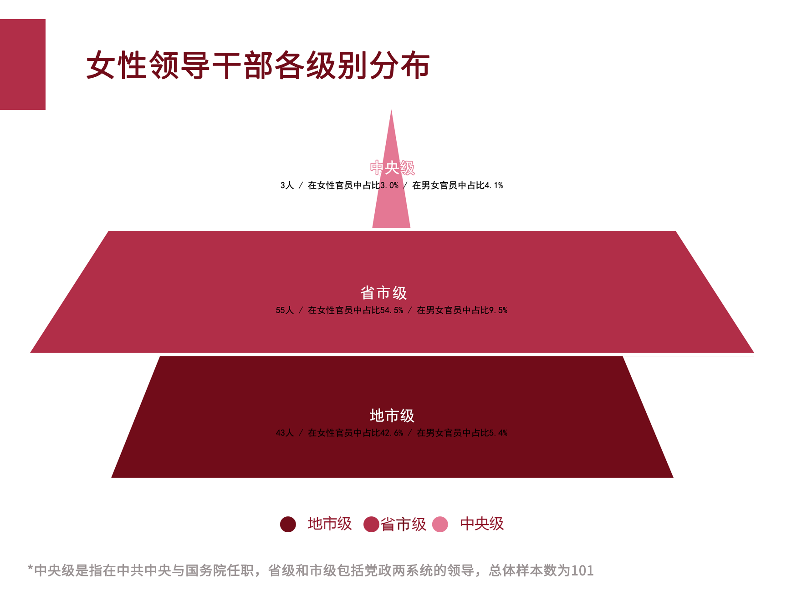

当女人想当人
上一篇：男人的子宫外挂
上一篇内容总结
女人更喜欢戴绿帽子；女人其实不是人，是一种性器官和子宫外挂；过期的子宫外挂；
嫁与富人家，富人家的钱，跟一个器官有什么关系？
男人的子宫外挂的自白
为什么现在越来越多女生不想结婚了？ - 知乎
https://www.zhihu.com/question/516912870/answer/2355719875
结婚了，后悔
哪怕我老公我公婆都还好，七年没孩子还没怎么催生。我老公对我也很好。
我真的特别特别特别得后悔大学一毕业就结婚了，结果毕业季找工作的黄金时间，我全在筹备婚礼装修房子。
缓过神来发现自己就变成了一个没有工作的已婚家庭妇女。
不是没有尝试过找工作，听说已婚未育
直接pass，最后找了没有五险一金任何福利的小公司苟延残喘，月工资两千五，上六休一。唯一的好处是朝九晚五，方便“照顾”家里，也就是方便给那个婆家提供的房子打扫卫生。
努了把力，跳了个槽，月工资三千上六休一。好处依然是方便“照顾家里”。老公每个月回家五天，家里他养的狗我养的猫，还有任何家务都基本是我的事儿，除了老公回家那几天。
有时候看看人家厂妹的工资，我还不如人厂妹。
考公试过，考教师也试过，教师资格证有了，但是什么单位都考不上，小城市的标准上升途径就是考公考教，千军万马太难了，几万人抢16个位置，我没有丝毫特长，一个普通本科生，既不是985也不是211更不能和各种硕士博士掰头。学费教了不少，总是差那么点意思就是上不了。
房子是老公父母提供的，车子是老公父母提供的，真羡慕我老公，父母什么都给准备了。
真羡慕我老公，父母连工作都给安排好了。真羡慕我老公，花钱时候永远那么潇洒自信，爱好广泛，想骑行就买几万的自行车，嫌买菜停车不方便就买个七八千的电动车，迷上摩托就花好几万买摩托车，想学琴就买琴报几万的培训班，想学箫就买好几管箫买几千块的课程，想学书法就可以专门买个柜子放满宣纸毛笔墨水，买几百块的耐克阿迪他父母都觉得他穿的邋遢，带他去买几千块的衣服鞋子。
他们的花钱行动我总不敢掺和，婚后的蜜月旅行，公婆出钱定地方，我只管默默跟着不发表任何意见就行，毕竟是带我出门给我一个外人花了钱，满怀不安。
他们买衣服我从来不去，不买，我的工资只配让我穿淘特拼多多。浑身上下唯一的一件够得上奢侈品的是一根迪奥口红，三百块钱可以买两年的满足。
不是自卑不是畏首畏尾，仅仅是实在懒得因为多一点物质而去付出更多的代价，上六休一的一天，跑去陪婆婆做饭洗碗聊天很累很累，尤其公婆交游广阔，又总喜欢在周末请来一大家子二三十个人人吃饭。
出嫁前，老家拆迁了，按人头分，我可以拿一个安置房，或者是二十万安家费，我父亲极力劝说我“女孩子要什么房子，反正你婆家已经买好房子了，你拿钱就行”，出嫁时政府还没发钱，出嫁后前两三年陆陆续续给了我八万，一年两三万。后几年就没有了。多一分钱都没有了。
我爸三套房，我妈一套房。
婆家给了六万嫁妆，父母都给我带上了，他们觉得他们供我“多年”读书之后什么都不要，还愿意给我分“二十万”空头支票，给我当“陪嫁”，就已经很对得起我了。
公婆给了六万彩礼，房子是婆婆名字，车子是老公名字。六万是我曾经有过的最大一笔钱，我本来打算存着还房贷，但因为是刚毕业，公婆怕我乱花，直接“带着”我去买了四万多的各种首饰，剩下的钱，拍婚纱照买婚纱买各种零七八碎的家用品花的没多少了。
我不喜欢戴任何首饰，也从来没有想过任何不属于我的东西，只是客观陈述事实。
我说不清，我当年到底是结婚好，还是不结婚好，因为其实在哪里我都没有自己的家。或许如果我没有因为和我老公有婚姻关系，我甚至没办法在一个月的二十五天里独自享有一个一百平的房子。
我也曾经偷偷在黑夜里睁着眼睛看着房顶和窗帘外的光线，想着，假设我和我老公离婚，那么我在婚内攒钱买下的房子我老公有没有权利分？后来知道了，可以分走。我又想，如果我和我老公离婚。我自己再攒钱买房子的可能性有多大？一个月三千，我先要租房子，房价不贵，租一个小平米的一户房子一年五六千，猫是我的，离婚我肯定要带走，养猫倒是还不怎么费钱，但是房租水电供暖养猫这些综合加起来，我的结余很少，攒一套房子的首付大概都得二三十年，二三十年后，我还有还贷的能力吗？这其中，我又万一病了怎么办呢？
想想都绝望。
绝望的时候疯狂寻找副业，却看着一个又一个的“宝妈在家也能做”“有部手机就能做”的骗局沉默无言。
看了很多创业的项目，关键字“零成本”“低投入”，“高回报”的我都直接划走，没有这样“零成本高投入”的美好项目会等着我的，会第一时间疯狂勾起我内心欲望的只有骗局，只有金字塔顶的人等着割我这样金字塔底的韭菜。
其实挺羡慕那些说不结婚就不结婚的女性，她们还尚有一定的底气，可能自己能力优秀，也可能父母还给撑着一片天，可能背后永远有家。
我没有。
像我这样普通平凡到泥里的人，可能嫁一个稍好一点的老公，有一个稍微明理的公婆，能因为成为别人家“娶进门的媳妇”，可以暂时拥有一处蔽身之所，一个方便的出行工具的使用权。然后付出你大部分的精力和时间，去维护这个你进入的，陌生的家庭家族甚至宗族关系。
我最后悔错过的就是那一套安置房，哪怕位置偏僻，那竟然是我短短三十年人生中，离“家”最近的一次。
贴一个隔壁答主的回答吧，这个答案揭示了很多重男轻女的真相，看着让人绝望https://www.zhihu.com/answer/982049376
更新在后面吧，说说我的近况。最近入职了一个我毕业时本来可能入职的工作，当时因为要结婚要照顾家庭没有考虑现在这个工作。但是过了蛮久了，我的生活过得也不怎么样，想脱离那时候的状况，恰好又遇到了类似的工作机会，就入职了。
离家两小时路程，每天住单位分配的宿舍，吃饭有补贴。月休五天，每月基本工资到手6k+，如果效益好会上浮两三千不等，五险一金福利好，年终奖普通员工1-3w不等，每年大概能拿到手10w+。
我毕业已经快七年，如果当时毕业就选择这样的工作，我应该早就买得起自己的房子了，我们这里房价不贵的。已经入职六年的话，我现在的工资可以到达12w-15w。
我在努力攒自己的房子。希望早日买到自己的房子。交了五险一金，也感觉有了后盾，国家将来会管我一口饭吃。稍微有了一点点安全感。
希望我们都越来越好，希望所有女孩子都不要走弯路，不要为了嫁人为了婚姻放弃工作上最好的选择。
以前一个月三千一年三万六，现在一年顶以前三年的工资，吃住还大多都在单位，有的梦终于不是遥不可攀了。
婚姻的危机，像潜伏在冰山下的暗角，可我想的是如果有一天再吵架我老公指着我鼻子骂“滚出我们家”的时候，至少单位宿舍还能暂时容留我，是我的一个落脚处。
今年30，终于活的像个人了。
毕业就结婚
最近收到一封来自全职太太的私信，很长。看得我很难过。
熟悉我的人大概知道我自己不会做全职太太的，因为我是低风险人生爱好者。
我客气一点说有些女性是全职太太，但是她们可能是全年无休，毫无保障零收入的全职太太，就算
老公把工资卡交了，她们家庭每个月的支出也是紧紧巴巴，捉襟见肘。
她跟老公是大学同学，两个人都是小城市，普通家庭。
老公是一个比较老实，对老婆好的男人，谈恋爱的过程中确实给了她很多很多的安全感和爱。
两个人刚毕业意外怀孕，然后很快结婚生娃。因为双方家庭都不怎么样，所以女方家长不想让女儿
受苦，对这段感情是否定的，就算是对方要给彩礼都觉得女儿注定要受苦，而且娘家也没什么本
事，能够如何贴补。娘家甚至还欠着外债。
不说在女儿的婚姻里面能捞点儿彩礼补窟窿，只是说从不想让女儿受苦的角度。
他们最终说：你要嫁的话，什么样的苦你都自己担着，我们也没有时间给你带孩子，咱家的有外债
你也不是不知道。
所以最终在这姑娘的一意孤行下一切从简。
就这样稀里糊涂地住进了老公的员工宿舍。在宿舍里待产加上照顾老公日常生活。
老公也是一个职场新鲜人，也挣不了多少钱。
甚至连员工餐也是只能领一份，但是他俩生生是靠自己多煮一份面或者多做一份米饭，两个人分吃
同一份员工餐的菜。
住的地方比较偏远，连买菜都不好买。 就算在拼多多买个5斤左右的萝卜红薯什么的，可能连着几
天也都是这样。
因为地方实在太小了，冰箱也小，放不了什么东西。
她仗着自己年轻，整个孕期所有能补充的东西也就是补充了一点儿叶酸。
婆婆公公来看，来照顾，也就是每个星期重点做好了肉鸡鱼从周六吃到周二。
按道理来说，应该算是嫁给了爱情。
老公能倾尽所有的爱她公公婆婆对她也还不错。
她一个小姑娘见的世面也少，也没有太大的期望值，就这么稀里糊涂的当了妈妈。
天有不测风云，她公公生了病。就算是用最便宜的保守治疗，也会让这个本身就捉襟见肘的小家庭
进一步雪上加霜。
而且公公丧失劳动力的情况下，婆婆也拼命去工作，和儿子一起维持住他的生命。
生娃的时候不是特别顺利。产程偏长，但是两个人真的没什么钱，根本不舍得特需病房，也不舍得
打无痛什么的，毕竟她是一个毕业就失业的无业游民，医保都没有买好。
也并没有任何人告诉她应该怎样做，在就近的公立医院一切都是自费。
生孩子之前，她是非常相信有情饮水饱的，毕竟自己真的还算幸福。但是生孩子之后，区区一个
堵奶就把她捉襟见肘的生活打回了原形。
我说澳洲的奶直邮过来也就200多块钱一罐，比有些国产奶还便宜。
她说可是我朋友圈里面连一个靠谱代购都没有。我竟然穷到连看别人在朋友圈做微商广告，都会着
急慌忙的把人家拉黑删除，就怕哪天乱花了我老公辛辛苦苦挣的钱。
这边要堵了奶，孩子饿得哇哇叫。找开奶师要花钱，全家人又是舍不得，所以婆婆拿包菜叶子给她
的胸部包了一层又一层，换了一轮又一轮。
孩子饿了就给喂水喝，一家人小心翼翼地在期待：万一过一会儿奶不堵了自动通了，是不是就少了
开奶师的钱，省了买奶粉的钱。
她说你没有堵过奶你很难理解啊，堵奶比顺产不打无痛还疼。是有刀子在戳自己的胸一样。
老公在旁边心疼地几乎落泪，但是真的一分钱难倒英雄汉。
她生生挺了一夜以后，孩子已经快饿晕了，自己也快疼晕了。他们终于一大早上去买奶粉去找开奶
师。
婆婆终究心疼钱，所以在她疼得要死的时候絮絮叨叨说不该给她那块红烧肉吃，这一块红烧肉好贵
啊。
于是这就是她的月子仇。
男同胞换位思考一下：你极度虚弱很久没正经吃过喜欢的好吃的了。你丈母娘善心大发赏了你一块
肉，你吃完后丁丁巨疼，像是有针扎。你丈母娘只愿意给你拿包菜叶子敷一敷，不肯让你去医院，
因为要花钱。
你娃还饿着，只能靠喂白开水。
针扎丁丁疼了一夜后终于不见好，你丈母娘大发慈悲让你去治丁丁。但是反反复复叨叨你治丁丁要
花钱，孩子喝奶粉要花钱，就不该给你那块肉吃。
你恨不恨她？
丁丁只有一根，乳房却有两个。
有了月子仇以后又怎样才能和平的共处在同一个屋檐下。
养孩子这一块也指望不上自己亲妈，因为家里有外债，所以亲妈在大城市给人当月嫂一个月万把块
钱。亲爹给人拉货。家里面的外债根本还没有还完。
老公经常跟她哭，说对不起她，说两个人太苦了，两个苦命的人怼到一块儿，接着就得苦孩子。
那怎么办呢？孩子都已经生了，再怎么苦也得养下去呗。
所以她成了年终无休，零收入无保障的一个社会闲散人员。
母乳属于省钱，奶不够的时候就疯狂地喝水。
她也想赶紧去工作。
但是一想两个人都工作的话，孩子就得让婆婆来带。
这么小的宿舍怎么住三个人。
就算是孩子可以去上托儿所幼儿园，托儿所幼儿园，也是一大笔支出。
她们目前每个月的支出甚至可以控制在500块钱以内。
她说我们就是太穷了，所以孩子不得不让我来带。
我的孩子可能在你看来就是活着就好，我根本就没有什么意识如何如何去培养。
你让我去学，可我已经一年多连个整觉都没睡过了。
太苦了，太难了。
我老公常常说，如果他有钱的话，我就不用受这样的委屈，是他无能。
我也觉得如果他有钱的话，我不会被那个堵奶折磨成那个样子，也不会连个无痛都舍不得打。
但是他所谓的对我好，已经是我能够拥有的所有的东西了，我内心里也是怨恨的，经常想一走了
之，一了百了，我除了我老公的爱，现在什么都没有。
健康的身体，年轻的外表，拿得出手的工作，我什么都没有，而且我会被这个孩子一直捆到幼儿园
甚至捆到小学。
因为对我们来说，让我在家里蹲着带孩子远远比送孩子去幼儿园要便宜，而且我不知道现在的我还
能找到什么样的工作。
你总说女孩子要注意圈子，多跟你厉害的人一起玩儿，问题是我又能给别人带来什么样的价值，谁
愿意跟我玩？ 我只是一个又穷又low自己的生活一团糟的怨妇。
因为有这个孩子，我感觉我的人生还没有开始就已经结束了，我无数次地在想：如果我和我的同学
们一样去投简历去找工作，哪怕在职场上受点气，能够堂堂正正的活着。而不是连一份员工餐都
要两个人吃，而且这种日子根本看不到头。
我现在想把孩子丢给婆婆带回老家。
我婆婆反而不肯，说她得挣钱给公公治病。
她带孩子我挣钱，我肯定舍不得把钱给公公花。但是我带孩子她挣钱，挣来的都给她老伴儿。
每次看你们说穷人配不配生孩子，我都想把我的故事讲给这些认为配生孩子的人看，我就是一个嫁
给爱情的穷人。可我们过的就是这样的生活，没有什么配不配，就看这种泥潭里一眼望不到头的生
活，谁愿意忍。
反正我很后悔。
但是我老公的确没做什么对不起我的事情，他只是命不好，我的命也没好到哪里去。
我们的孩子更是一个倒霉蛋，一出生就要活在这种妈妈的奶一堵就要拿白开水混水饱的家庭。
生活带来的苦，远远大于恋爱的那一点儿甜。
也就是那点甜支撑着，我现在还没有自杀没有跑路，因为我老公还在苦苦撑着。
我没法想，如果一个人要过这种苦日子，而且跟老公感情不好，这日子有什么过头？
我大学刚毕业两年，现在憔悴苍老得就像一个30多岁的女人，我早已忘了自己的梦想是什么。
每天面对孩子，我也没有什么太大的 耐心去教他说话，跟他玩，甚至我恨他，他搅乱了我的生活祸
害了我的人生。每天像一个讨命鬼一样，作得我睡不着觉，一脸苦相经常闹人。
我知道我有产后抑郁，那又怎样？我有钱治吗？
总结
女人是性器官和子宫外挂
器官不配有五险一金、不配有稳定收入。
器官不配当高管、升职加薪。
